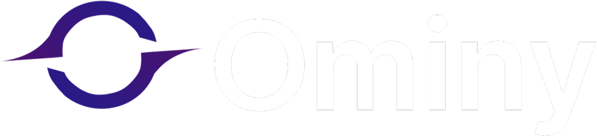

Publicado
Ominy Desenvolvimentos
Site institucional da empresa, com identidade tecnológica, animações modernas e apresentação dos serviços.
Site oficial da Ominy, criado para apresentar a empresa e seus serviços com uma identidade visual tecnológica e animações modernas.
Visitar site